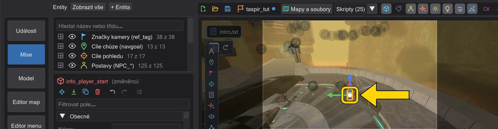
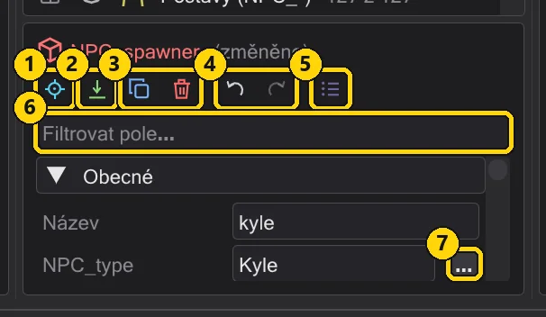
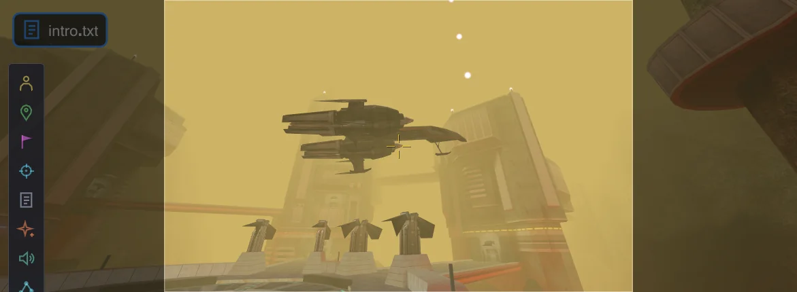
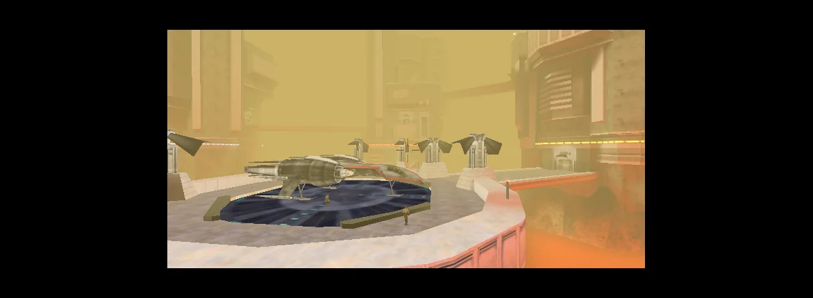
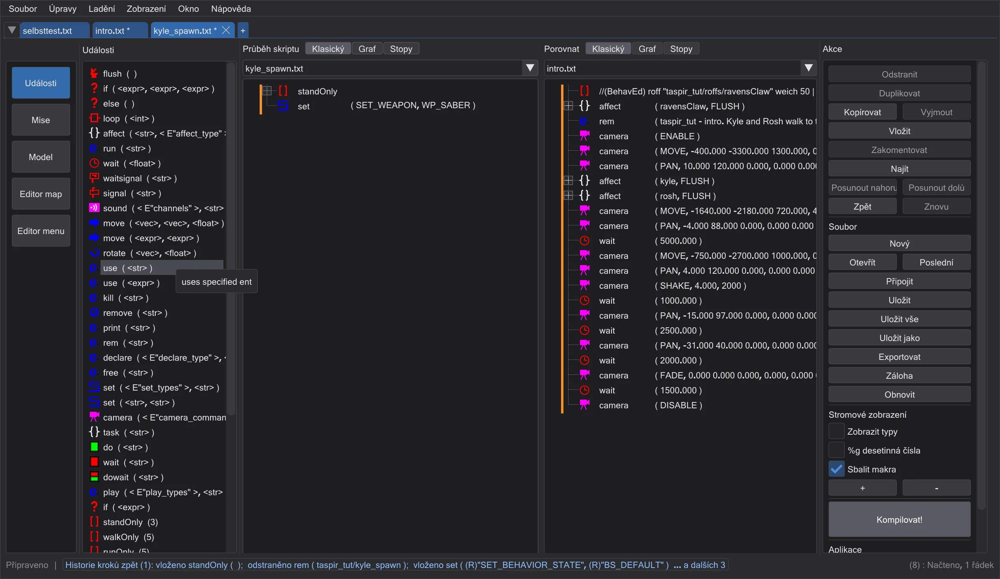
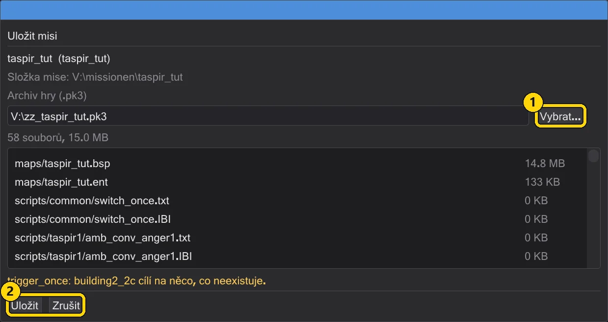

Vlastní mise: vzlet na Taspiru
Kompletní malá mise pro Jedi Academy, postavená z ničeho: Kyle a Rosh jdou přes přistávací plošinu, kamera je sleduje, Raven's Claw vzlétne a proletí kolem kamery, obraz se otřese a zatmí do černa - a hra to přehraje.
 Animace
AnimaceTento tutoriál používá jen základní hru: mapu taspir1 - přistávací plošinu na začátku mise Taspir III - s Kylovou lodí Raven's Claw a postavami Kyle a Rosh. Nepotřebujete nic než Jedi Academy a JK Studio. Každý obrázek na následujících stránkách vznikl, zatímco se stavěla přesně tato mise, krok za krokem.
Části#

1 · Vytvoření mise
Nová mise na taspir1: mapa, start hráče, spouštěč skriptu a úvodní skript se vytvoří za vás.

2 · Umístění postav
Kyle a Rosh na jižním okraji plošiny a pro každého cíl chůze před lodí.

3 · Nechat je jít
Blok affect pro každou postavu: jít k cíli, počkat, až tam bude, pak se podívat na toho druhého.

4 · Kamera
Celkový záběr plošiny, sjezd dolů za ty dva, nastavený z pohledu a proletěný ručně.

5 · Loď vzlétá
Animujte Raven's Claw čtyřmi klíči a uložte let jako soubor ROFF.

6 · Střih, otřesy, sledování, zatmívání
Třetí záběr zvenku plošiny, otřesy při vzletu, kamera otáčející se za lodí, zatmívání do černa - a načasování opravené na časové ose.

7 · Druhý skript
Kyle dostane spawn skript s makrem - a rozdělené zobrazení ukáže oba skripty vedle sebe.

8 · Uložit a hrát
Zkontrolujte misi, zabalte ji do .pk3 a spusťte ji ve hře.
Než začnete#
- Jednou přidejte složku hry: Úpravy → Složky hry → Přidat složku hry → složka
basehry Jedi Academy (ta sassets0.pk3). Viz Řekněte mu, kde je hra. - Je-li pro vás okno nové, přečtěte si nejdřív Okno - pět minut.
- Vše lze vrátit pomocí Ctrl+Z. Soubory hry se nikdy nemění: vaše mise jde do vlastní složky a vlastního
.pk3.